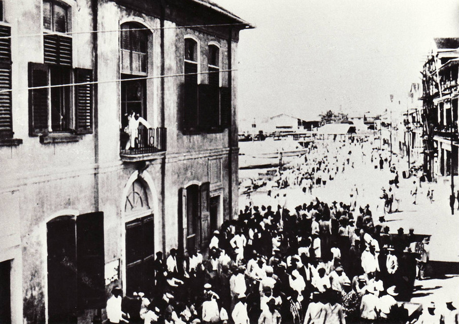
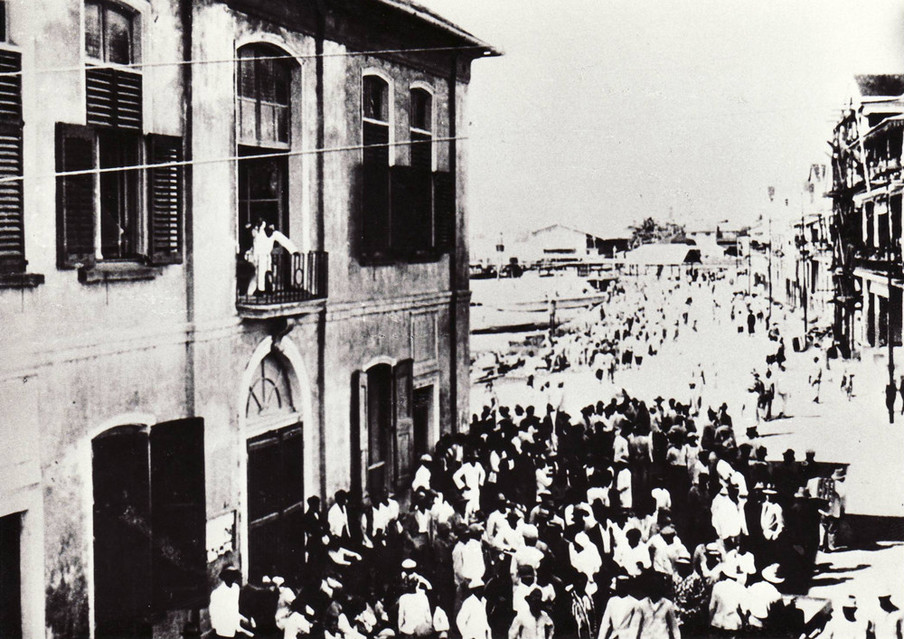

Al die jaren wilde De Kom terug naar Suriname. Hij had geleerd van de vakbonden in Nederland hoe eenheid onder arbeiders kon leiden tot verandering, en hij wilde zijn kennis en ervaring inzetten in Suriname.
Na lang voor de overtocht te hebben gespaard, vertrok hij in 1932 met zijn vrouw en kinderen naar Suriname. Hij had het plan om zich in te zetten voor de rechten van de arbeiders, vaak contractarbeiders die door de Nederlanders op Java waren geronseld en naar Suriname verscheept om zwaar werk op de plantages te doen.
Op dat moment was elke aanzet tot het verenigen van arbeiders in Suriname door de Nederlandse overheid onmogelijk gemaakt. De autoriteiten in Paramaribo waren vanuit Den Haag gewaarschuwd voor de komst van deze als gevaarlijke agitator bekend staande publicist.
Ze zagen De Koms komst dan ook met grote argwaan tegemoet, bang als ze waren dat zijn aanwezigheid tot een opstand onder het morrende werkvolk zou leiden. Vanaf het moment dat hij aankwam in Paramaribo, werd De Kom gevolgd door gewapende agenten.
Aan zijn collega’s bij het tijdschrift Links Richten schreef hij: ‘Paramaribo, 15 Jan. 1933. Waarde makkers, Sedert mijn komst te Paramaribo heerscht er een staat van beleg. Politie en militairen gemobiliseerd. Voor mijn huis politie. Op straat word ik achtervolgd. Men heeft mij letterlijk gemuilkorfd. Nog nooit zag ik zulk een willekeur. Ik mag nergens vergaderen, alle meetings worden uit elkaar geslagen. Later schrijf ik meer, heb nu geen tijd. Met kam. groeten aan allen, ADEK.’
De Kom was van plan geweest om lezingen te geven over de geschiedenis van Suriname, en zich daarmee in te zetten voor het zelfbewustzijn van de zwarte arbeiders, maar in de dagen die volgden op zijn aankomst in Suriname, verbood de koloniale overheid zijn lezingen, en werden eerder afgegeven vergunningen plotseling ingetrokken. Hij besloot daarom een adviesbureau te openen:
‘En ineens weet ik, ik zal een adviesbureau oprichten en luisteren naar de klachten van mijn makkers […]. En misschien zal het mij lukken hen iets te doen gevoelen van al de hoop en moed die besloten liggen in dat ene machtige woord dat ik leerde in den vreemde: organisatie.’
‘Onder de boom echter, langs mijn tafeltje, passeert de parade der ellende. Paria’s met diepe holle wangen. Hongerlijders. Mensen zonder voldoende weerstand. Open boeken om in te lezen het moeizaam vertelde verhaal van onderdrukking en ontbering.’
Na het verzamelen van de klachten van voornamelijk Javaanse en Hindostaanse contractarbeiders, was hij ontdaan door de armoedige en bij vlagen uitzichtloze situatie van het volk.
De arbeiders, vaak analfabeet, waren verstrikt geraakt in sluwe contracten waarbij kosten als ziekenzorg, eten, huur en uitzinnige boetes werden opgenomen als schuld, met als resultaat dat de arbeiders nauwelijks boven het bestaansminimum kwamen.
Bij het bureau van De Kom was het voor het eerst dat deze mensen hun stem konden laten horen, en ze stroomden dan ook van heinde en ver toe om hun naam en hun klachten te laten optekenen. Ze waren zo blij dat er eindelijk iemand was die naar hun grieven luisterde, dat De Kom al snel de liefkozende bijnaam ‘papa De Kom’ kreeg toebedeeld.
De Kom, nog altijd een groot idealist, was ervan overtuigd: als hij de schriften waarin hij de klachten had opgetekend, aan zou bieden aan de gouverneur, zou deze niet langer om de situatie heen kunnen. Hij had zich vergist.
De oploop rondom het adviesbureau maakte de koloniale politie zo onrustig, dat ze de menigte uiteen begon te slaan. In de hoop dat het geweld zou stoppen, bood De Kom aan mee te gaan naar het bureau om de zaken daar uit te praten. Prompt werd hij afgevoerd naar de kerkers van Fort Zeelandia en gevangengezet.
Het nieuws van zijn arrestatie verspreidde zich als een lopend vuurtje door Suriname en in de dagen erna stroomden duizenden mensen naar Paramaribo om zijn vrijlating te eisen. De gouverneur liet een bericht uitgaan dat De Kom spoedig zou worden vrij gelaten. Toen dat op dinsdag 7 februari niet zoals toegezegd gebeurde, en de betogers luidkeels om ‘papa De Kom’ riepen, gaf de angstig geworden procureur-generaal het bevel het vuur op de ongewapende arbeiders te openen. Er vielen 22 gewonden en twee doden.
De Kom bleef drie maanden, zonder proces, opgesloten in een van de kerkers van Fort Zeelandia. In mei 1933 werd hij samen met zijn gezin in het diepste geheim Suriname uitgezet. Koloniale politie en bestuurders feliciteerden elkaar met het in de kiem smoren van wat een volksopstand dreigde te worden maar onder Surinamers zou 7 februari 1933 de geschiedenis ingaan als Zwarte Dinsdag.